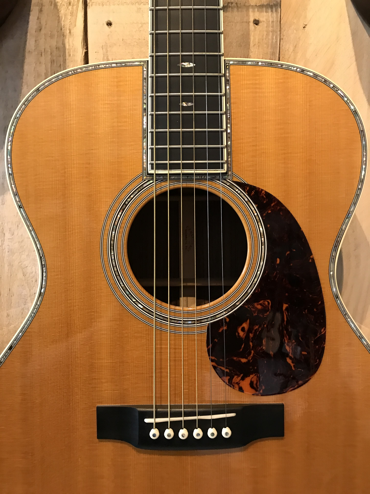
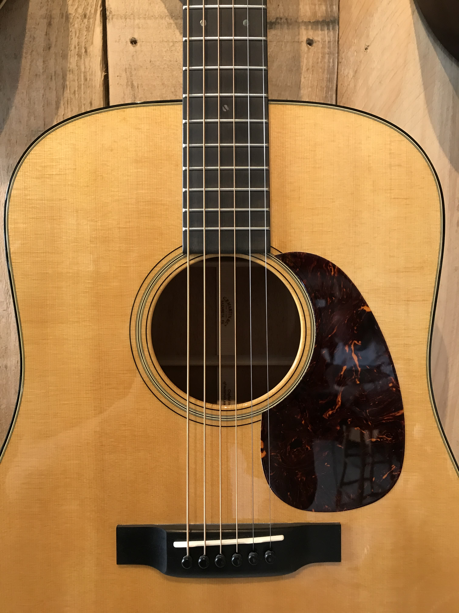
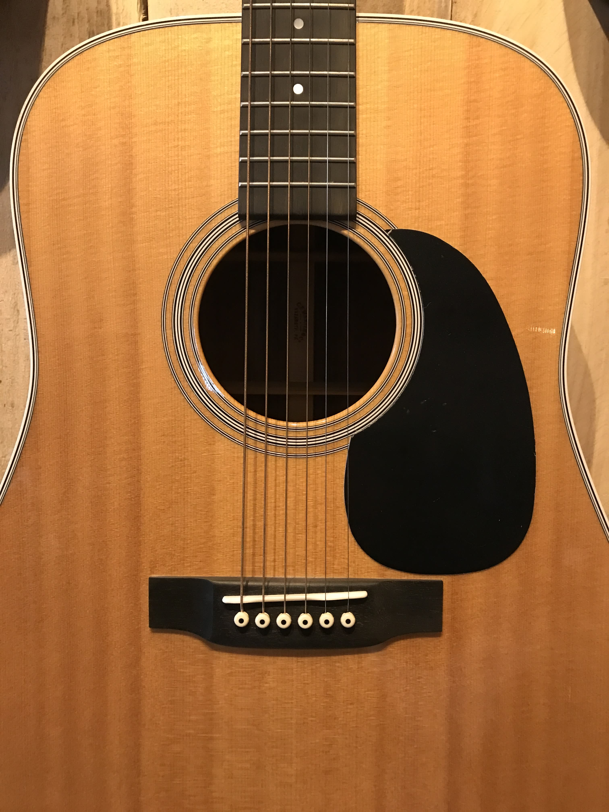
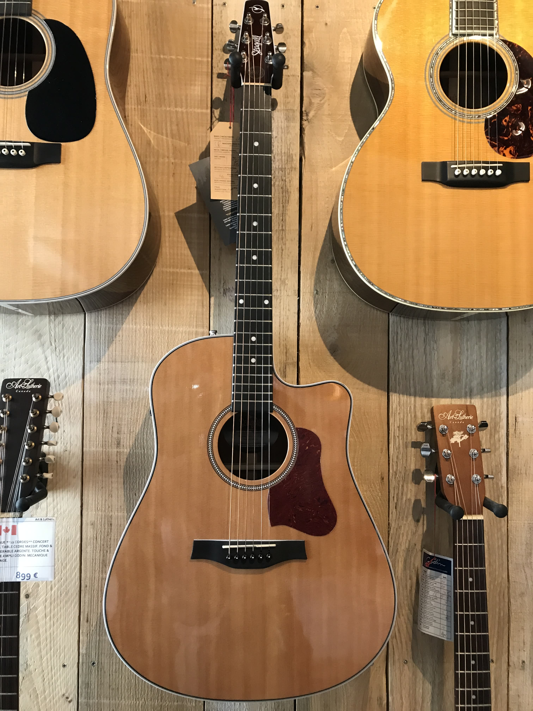
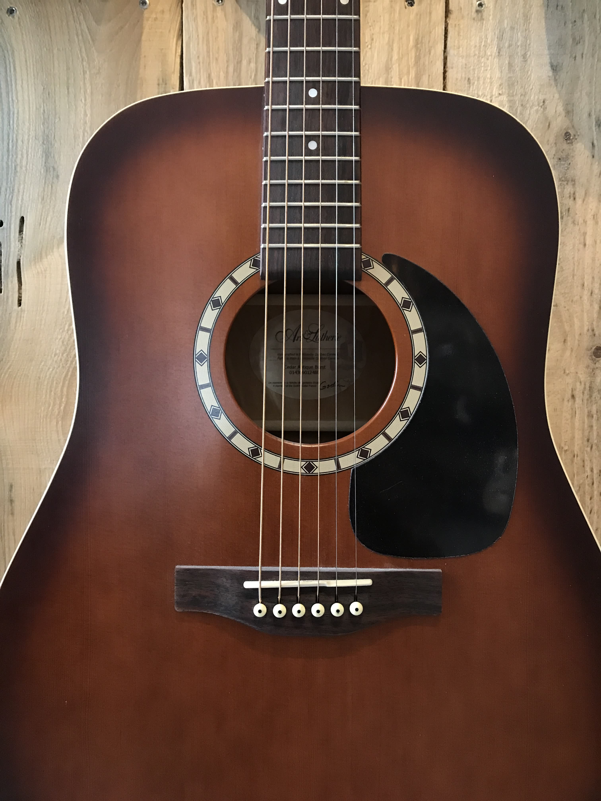
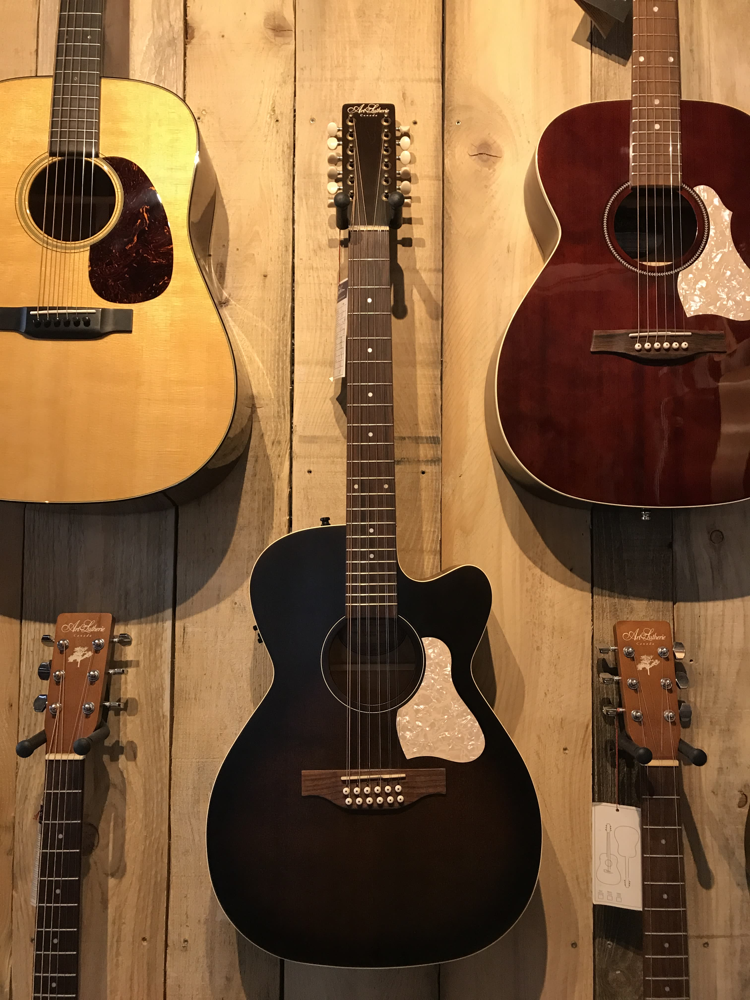
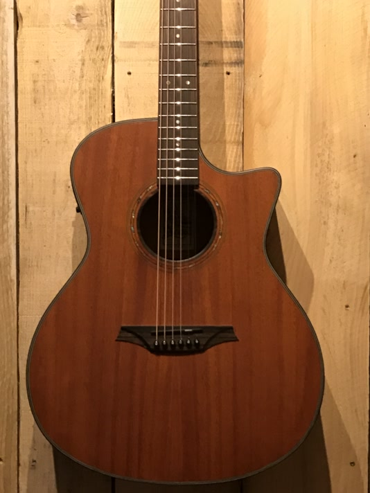

Guitares acoustiques
Découvrez notre collection de guitares acoustiques, triées par marque.
Martin
- 000-42

** Made in USA ** Guitare acoustique finition naturelle vernis brillant. Table en épicéa Sitka massif. Dos et éclisses en palissandre indien massif. Touche et chevalet en ébène. Mécaniques or. Fournie avec étui Martin.
- Table : Épicea Sitka massif
- Manche : Acajou massif
- Mécaniques : Or
- Plaque : Écaille
- Dos & éclisses : Palissandre indien massif
- Touche & Chevalet : Ébène
- Fourni avec étui Martin
- D-18

Une guitare acoustique aux finitions naturelles vernis brillant made in USA. Grâce à son format dreadnaught et sa table d'harmonie en épicea massif, le son de cette guitare est projeté avec puissance et élégance. Un bijou digne des ateliers Martin.
- Table : Épicea massif
- Manche : Acajou massif
- Mécaniques : Chrome Martin
- Plaque : Écaille
- Dos & éclisses : Acajou massif
- Touche & Chevalet : Ébène
- Fourni avec étui Martin
- D-28

Une guitare acoustique aux finitions naturelles vernis brillant made in USA. Grâce à son format dreadnaught et sa table d'harmonie en épicea massif, le son de cette guitare est projeté avec puissance et élégance. Un bijou digne des ateliers Martin.
- Table : Épicea massif
- Manche : Acajou
- Mécaniques : Chrome Grover
- Plaque : Noire
- Dos & éclisses : Pallissandre indien massif
- Touche & Chevalet : Ébène
- Fourni avec étui Martin
Seagull
- Maritime SWS CW GT EQ

Le fleuron acoustique de Godin made in Canada. Équilibre parfait, toucher soyeux. Une guitare électro-acoustique en pan coupé douce, précise et naturellement élégante.
- Table : Épicea massif
- Fond éclisses & manche : Acajou massif
- Pré-ampli : Fishman, potentiomètres pour volume, basses et aigues. Bouton phase et accordeur intégré
- Mécaniques : Chrome
- Touche : Richlite
- Chevalet : Ébène
Art & Lutherie
- Cedar Antique Burst

Faite à la main aux ateliers Godin, cette guitare électro-acoustique au format concert hall mêle confort et esthétique avec son teint bleu satin !
Son format Concert Hall n’empêche pas d’avoir un son puissant, bien au contraire ! 😵
Pour ce faire, table en épicéa massif, fond et éclisses en merisier, et touche & chevalet en palissandre permettent de projeter le son des cordes 🪵
Enfin, on retrouve deux potentiomètres : Volume et Tone
- Legacy Blue Q Discrete

Faite à la main aux ateliers Godin, cette guitare électro-acoustique au format concert hall mêle confort et esthétique avec son teint bleu satin !
Son format Concert Hall n’empêche pas d’avoir un son puissant, bien au contraire ! 😵
Pour ce faire, table en épicéa massif, fond et éclisses en merisier, et touche & chevalet en palissandre permettent de projeter le son des cordes 🪵
Enfin, on retrouve deux potentiomètres : Volume et Tone
- Parlor (différents modèles disponibles)

Texte à propos des guitares acoustiques, dire à quel point elles sont géniales.
- Legacy 12 Bourbon Burst CW EQ

Texte à propos des guitares acoustiques, dire à quel point elles sont géniales.
Guild
- Titre guitare
Texte à propos des guitares acoustiques, dire à quel point elles sont géniales.
Bromo
- BAT2MCE

Texte à propos des guitares acoustiques, dire à quel point elles sont géniales.